Workshop i at lave dine egne lys hos Candle Studio
Hos Candle Studio elsker de lys. Det gælder både duftlys, dekorationslys
og de skæve lys i sjove former og farver. Denne passion vil de gerne dele
med jer gennem hyggelige øjeblikke i deres butik på Frederiksgade i Aarhus.
Find det lys, der taler til jer, og slå jer ned ved et af de fine borde, der
er gjort klar til, at I skal være kreative. Ved bordet skal I arbejde med jeres
egne stearinlys efter den lyspakke, I vælger. Candle Studio glæder sig til at byde
jer varmt velkommen og tænde op for hyggen sammen med jer.
2 timers workshop i at lave lys
En lyspakke, som varierer alt efter hvilken variant, I vælger
Mulighed for personlig vejledning
Lyspakken kan nemt opgraderes på dagen, hvis andet ønskes
Pris fra 229 kr per. person
Lav din egen keramikkop eller skål hos YŌNOBI Aarhus
I Aarhus' charmerende Latinerkvarter finder du den hyggelige Pinch Pot Café YŌNOBI, hvor du kan designe din egen kop eller skål ved hjælp af Pinch Pot-teknikken. Med YŌNOBIs nemme materialer og simple metode kan alle forme, dreje og klemme leret med hænderne. YŌNOBIs medarbejdere står klar til at guide dig, hvis du får brug for hjælp. Når du er færdig med din keramik, vælger du din foretrukne farve til keramikken, som efterfølgende brændes og kan hentes 2-3 uger senere.
2 timers oplevelse, hvor du skal forme og skabe din egen unikke kop eller skål med Pinch Pot-metoden
Udførlig guide til en basis Pinch Pot, dette kan ende med at blive en kop eller lille skål
Ler til en basis Pinch Pot, det nødvendige værktøj, valgfri glasur og brug af farve til mønstre m.m.
Efterfølgende brænding, så du kan bruge din keramik derhjemme
Pris fra 199 kr. per person
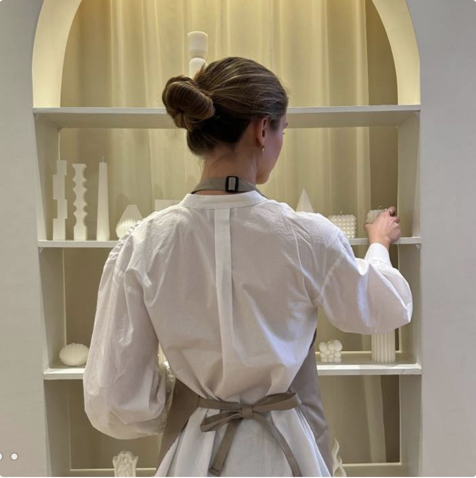
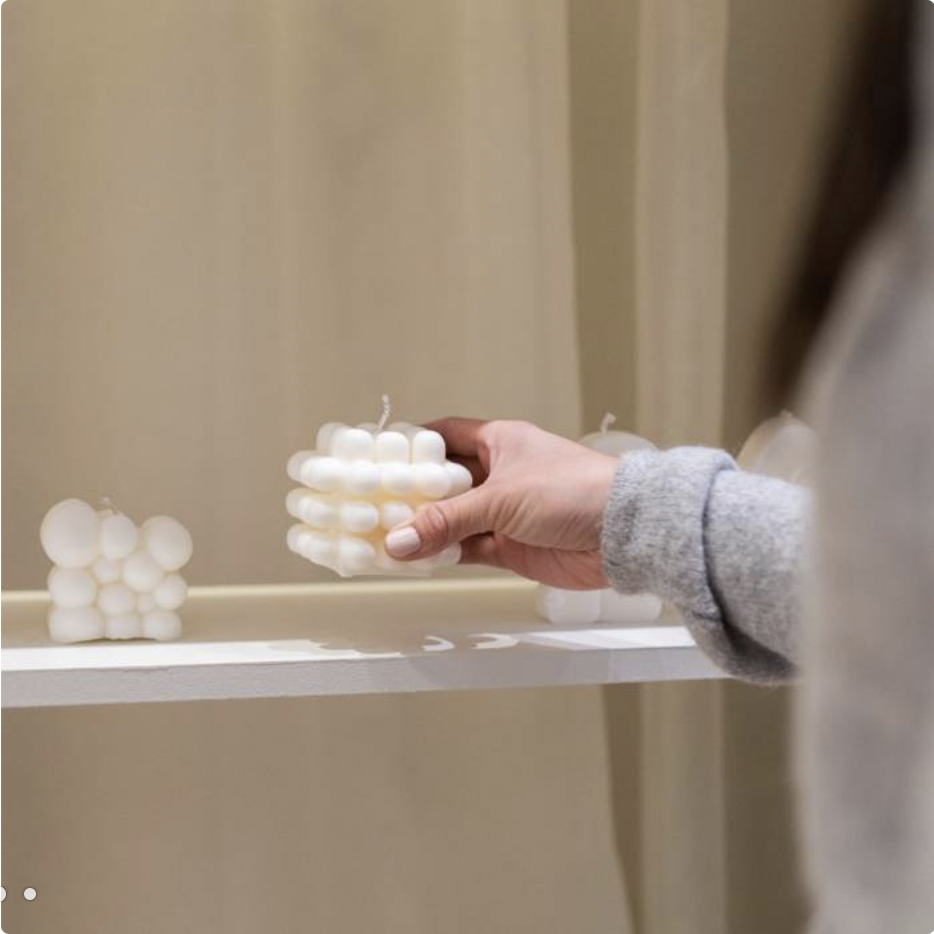
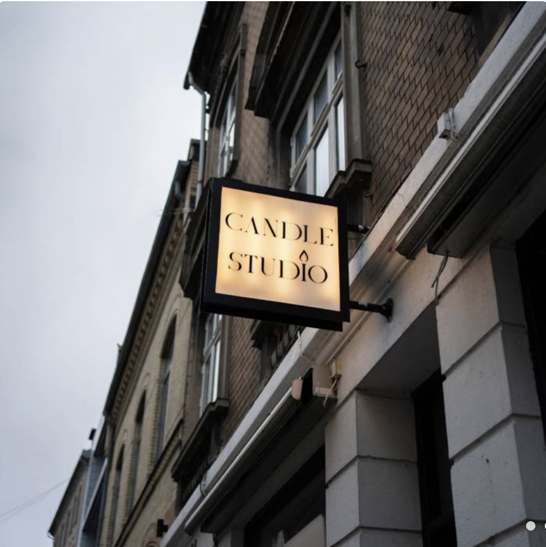
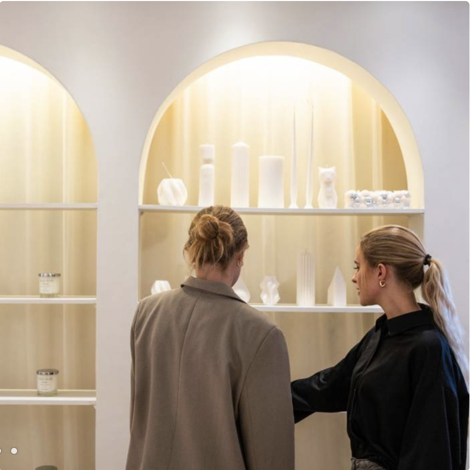
Workshop i at lave dine egne lys hos Candle Studio
Hos Candle Studio elsker de lys. Det gælder både duftlys, dekorationslys og de skæve lys i sjove former og farver. Denne passion vil de gerne dele med jer gennem hyggelige øjeblikke i deres butik på Frederiksgade i Aarhus. Find det lys, der taler til jer, og slå jer ned ved et af de fine borde, der er gjort klar til, at I skal være kreative. Ved bordet skal I arbejde med jeres egne stearinlys efter den lyspakke, I vælger. Candle Studio glæder sig til at byde jer varmt velkommen og tænde op for hyggen sammen med jer.
2 timers workshop i at lave lys
En lyspakke, som varierer alt efter hvilken variant, I vælger
Mulighed for personlig vejledning
Lyspakken kan nemt opgraderes på dagen, hvis andet ønskes
Pris fra 229 kr per. person
 x
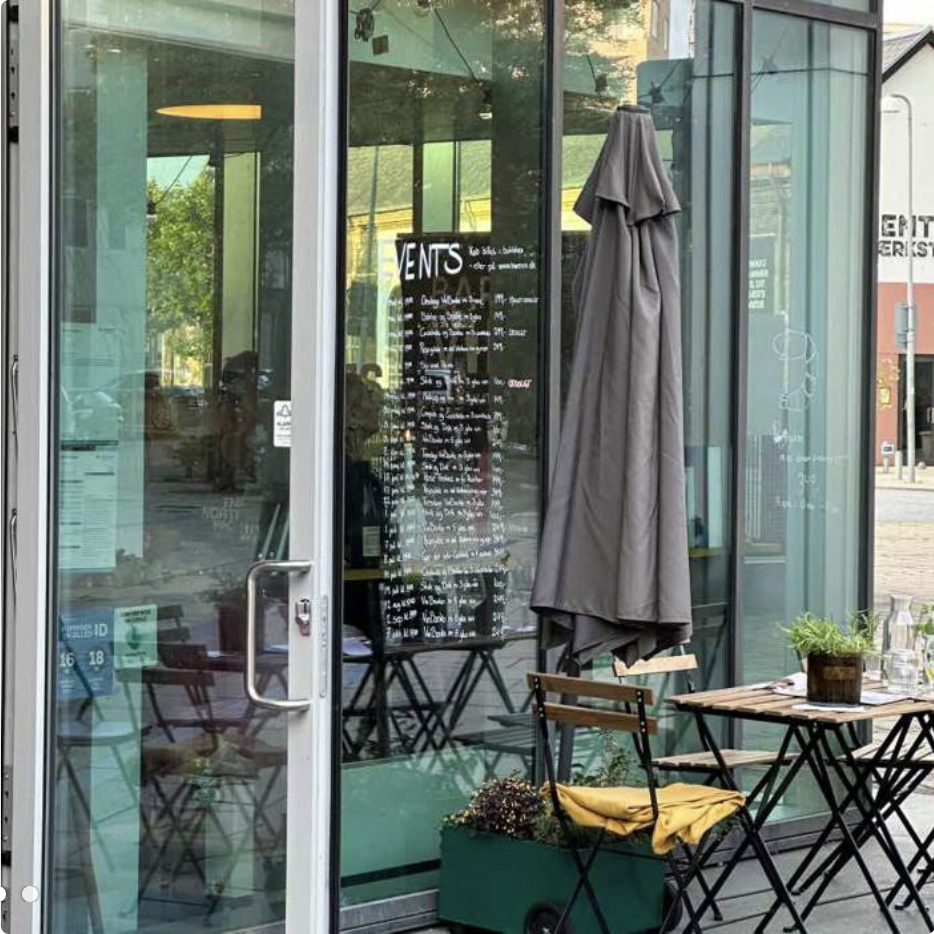
x
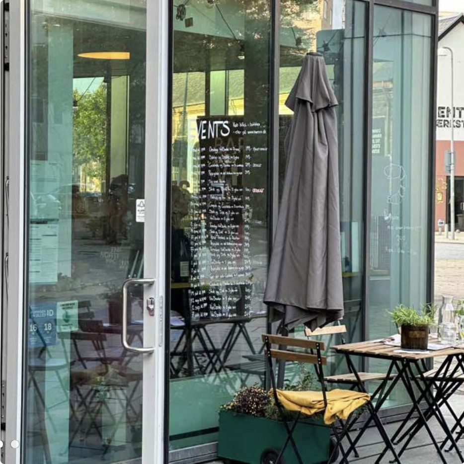
 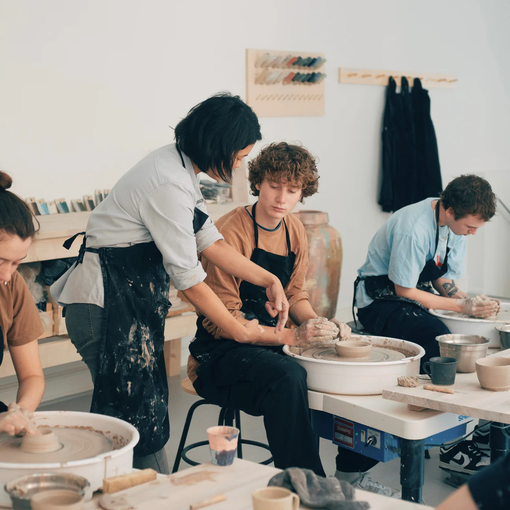
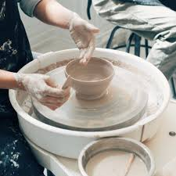
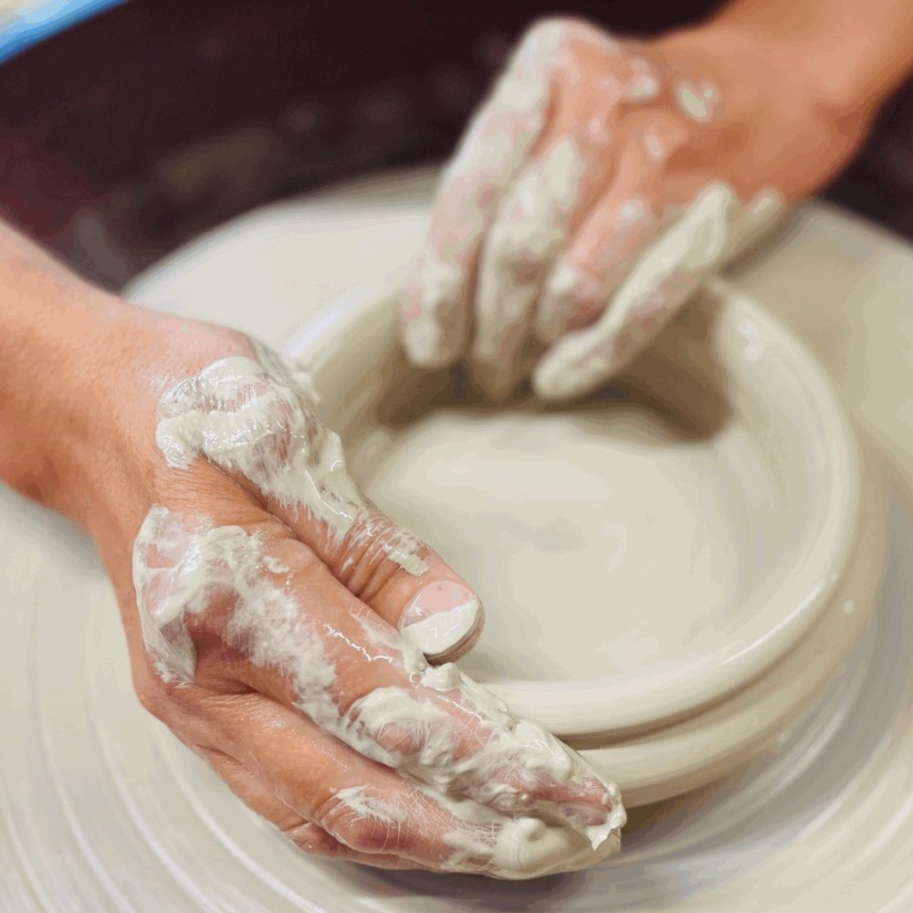
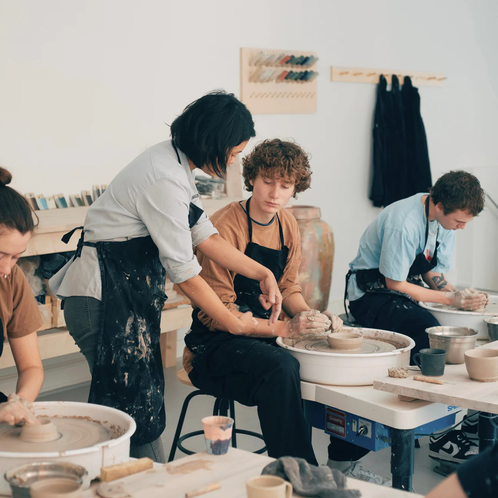
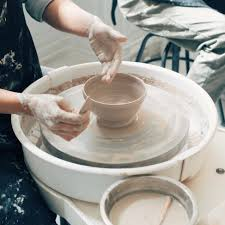
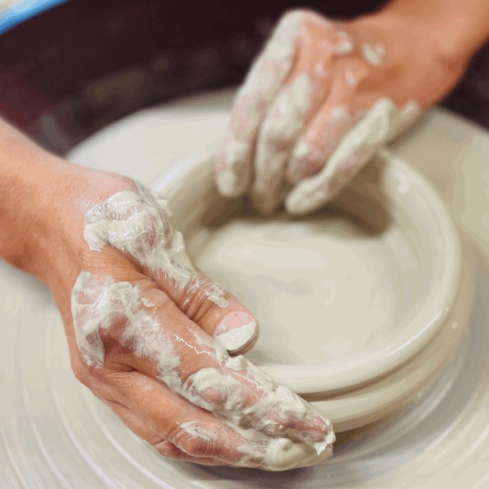